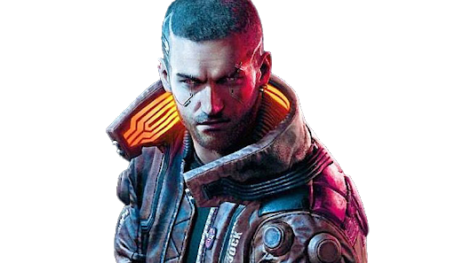

What is CyberPunk?
Cyberpunk 2077 is a 2020 action role-playing video game developed and published by CD Projekt. The story takes place in Night City, an open world set in the Cyberpunk universe. Players assume the first-person perspective of a customisable mercenary known as V, who can acquire skills in hacking and machinery with options for melee and ranged combat.
Gameplay
 You be playing in first-person perspective as "V", the main character of Cyberpunk 2077. This is a game that allows you to basically customize any of your appearances and allow you to walk, drive, or ride anywhere inside the game. You can interact and have meaningful conversations with all of the AI charaters.
 The open world metropolis Night City, California, consists of six regions:
The open world metropolis Night City, California, consists of six regions:
- Corporate City Centre
- Watson
- Heywood
- Pacifica
- Santo Domingo
- Westbrook